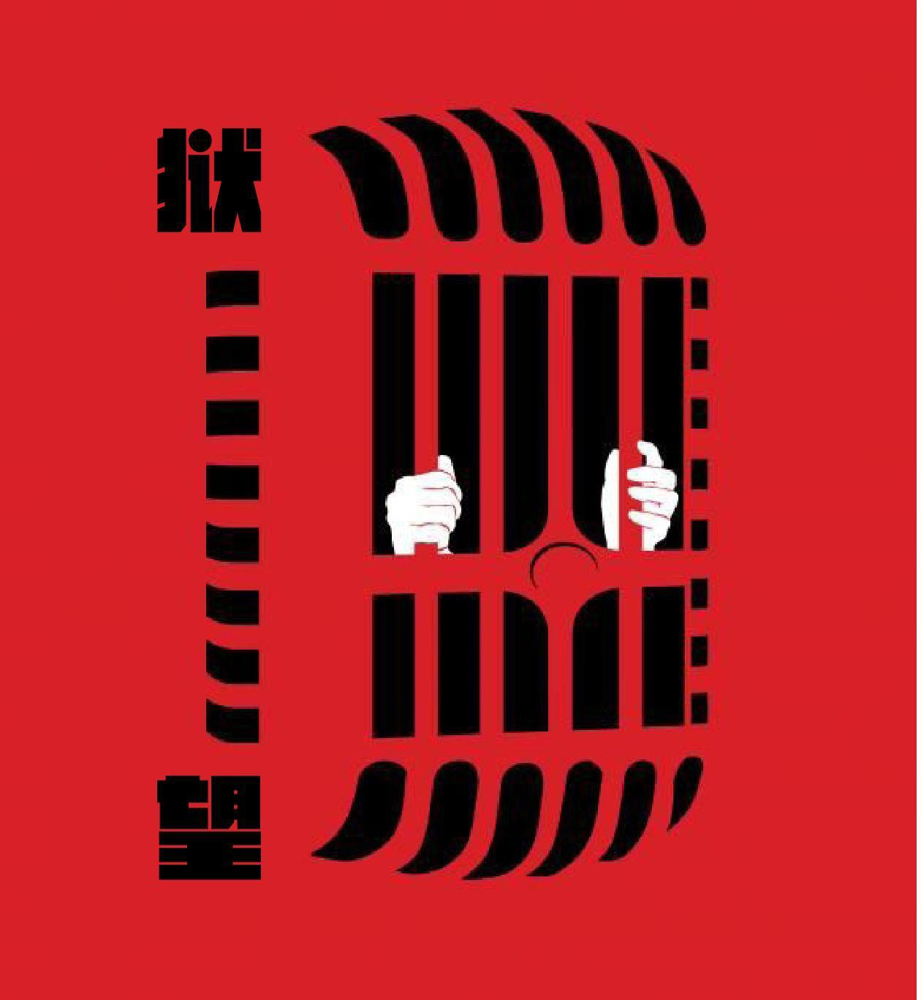

PREVIEW 预览模式

狱望
PRISON ART
首页
播客
艺术介入监狱
监狱摄影
监狱绘画
监狱诗歌
监狱旅游
监狱历史
监狱音乐
杂谈
首页
全部文章
🗺 世界监狱地图
狱望 Prison Art
汇集监狱与人文艺术相关的内容，探讨
人性、救赎与自由
。
ART INTERVENTION
艺术介入监狱
意大利沃尔特拉监狱重刑犯的戏梦人生
戈多在监狱
铁栏与面具之后：用戏剧影响囚犯
监狱吉他之门
委内瑞拉的音乐救助系统
监狱里的美术疗法
宗巴监狱项目
监狱中的瑜伽
PHOTOGRAPHY
监狱摄影
马格南摄影师镜头里的监狱
监狱里的女性
监狱里的老年人
莉兹·萨丁摄影集《被惩罚的未成年人》
监狱里的精神病患者
丹尼·莱昂摄影集《和死亡对话》
Bruce Jackson作品
PAINTING
监狱绘画
毕加索的蓝色时期与圣拉扎尔监狱
戈雅：画下怪诞时代的X光
被囚禁的库尔贝先生
埃贡·席勒的画与日记
POETRY
监狱诗歌
瑶溪作品选
莫莫的诗
《铁窗的眼睛》林建隆俳句选
希克梅特《九点到十点的诗》
HISTORY
监狱历史
清末狱政改革回望
西德尼·甘博镜头下的民国监狱
作为水上监狱的囚船
二战期间美国的日裔拘留营
MUSIC
监狱音乐
20首与监狱相关的歌
永远的黑衣人
牢狱歌手枪肚皮
B.B. KING
TRAVEL
监狱旅游
监狱旅游
🗺 世界监狱博物馆地图 →
MISCELLANEOUS
杂谈
世界监狱人口简报
我的监狱情结
农村青年成长史
X市监狱退役后的访记